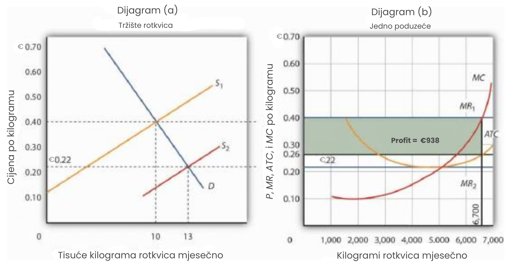
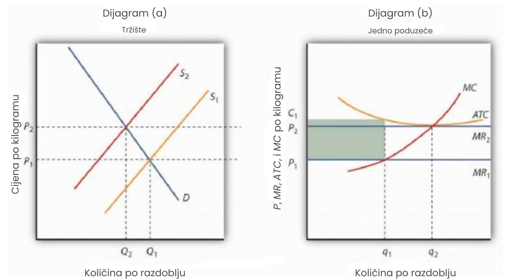
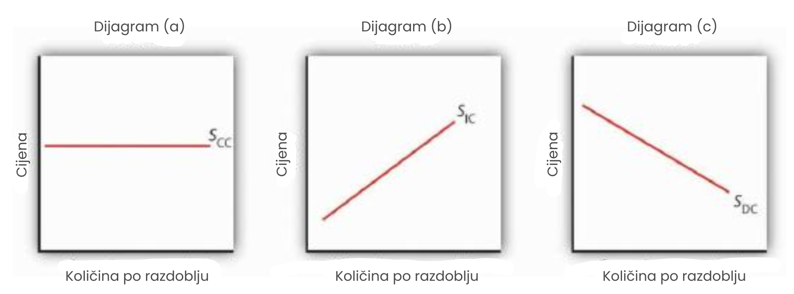
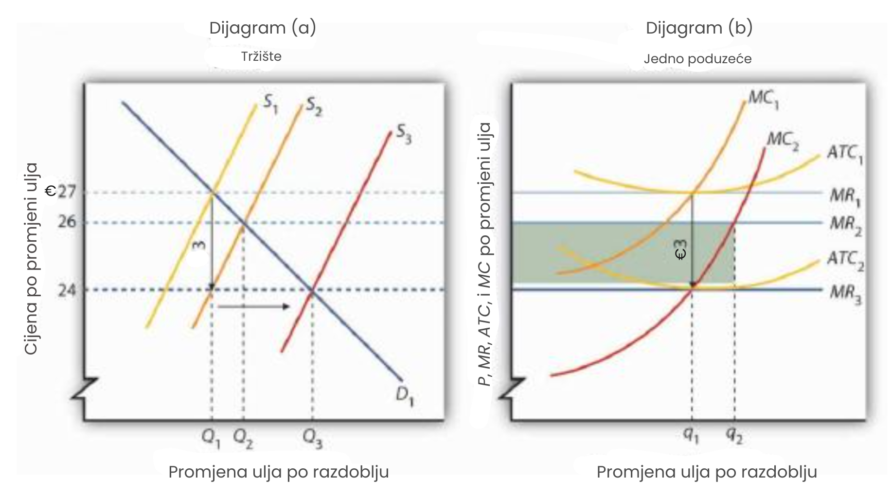

Savršena konkurencija u dugoročnom razdoblju
U dugom roku poduzeće može slobodno prilagoditi sve svoje ulazne faktore. Nova poduzeća mogu ući na bilo koje tržište, a postojeća ga mogu napustiti. U ovom ćemo odjeljku vidjeti da model savršene konkurencije predviđa da se u dugoročnom ravnotežnom stanju proizvodnja odvija uz najniži mogući trošak po jedinici te da svi ekonomski profiti i gubici nestaju.
Ekonomski profit i ekonomski gubitak
Ekonomski profiti i gubici imaju ključnu ulogu u modelu savršene konkurencije. Postojanje ekonomskih profita u nekoj industriji dugoročno privlači nova poduzeća. Kako poduzeća ulaze na tržište, krivulja ponude pomiče se udesno, cijena pada, a s njom i profit. Ulazak traje sve dok ekonomski profit ne padne na nulu. Ako poduzeća u industriji ostvaruju ekonomske gubitke, neka će izaći s tržišta. Krivulja ponude tada se pomiče ulijevo, cijene rastu, a gubici se smanjuju. Izlazak traje sve dok preostala poduzeća više ne trpe gubitke – dok ekonomski profit ne postane nula.
Prije nego što objasnimo kako ulazak i izlazak poduzeća uklanjaju ekonomske profite i gubitke, važno je razumjeti razliku između računovodstvenog i ekonomskog pojma profita i gubitka.
Ekonomski nasuprot računovodstvenom pojmu profita i gubitka
Ekonomski profit jednak je ukupnim prihodima umanjenim za ukupne troškove, pri čemu se trošak mjeri kao oportunitetni trošak. Ekonomski gubitak (negativni ekonomski profit) nastaje kada ukupni troškovi premašuju ukupne prihode.
Računovođe u troškove uključuju samo eksplicitne troškove. To su izravna plaćanja za proizvodne faktore poput rada i kapitala, kao i procjene amortizacije. Profit izračunan na temelju samo eksplicitnih troškova naziva se računovodstveni profit. To je pokazatelj profita koji poduzeća najčešće prijavljuju; na temelju njega plaćaju poreze, a dionička društva prikazuju ga u svojim financijskim izvještajima. Da bi izračunao računovodstveni profit, gospodin Gortari, proizvođač rotkvica, oduzeo bi eksplicitne troškove – poput troškova rada, opreme i drugih materijala – od prihoda koji ostvaruje.
Ekonomisti, za razliku od računovođa, uzimaju u obzir i implicitne troškove. Kada gospodin Gortari ne bi uzgajao rotkvice, mogao bi s istom zemljom i trudom uzgajati nešto drugo. Recimo da bi u tom slučaju mogao proizvoditi mrkvu i ostvarivati računovodstveni profit od 250€ mjesečno. Taj iznos predstavlja oportunitetni trošak – prihod koji propušta time što ne proizvodi mrkvu. Taj trošak nije eksplicitan; ne pojavljuje se u računovodstvenim izvještajima, ali je dio ekonomskih troškova. Trošak koji se priznaje u ekonomiji kao oportunitetni, ali nije eksplicitan, naziva se implicitni trošak.
Dugi rok i nulti ekonomski profiti
S obzirom na definiciju ekonomskog profita, jasno je zašto u savršenoj konkurenciji on u dugom roku mora biti jednak nuli. Pretpostavimo da postoje dvije industrije, i da poduzeća u industriji A ostvaruju ekonomski profit. To znači da ostvaruju veći povrat od onog koji je dostupan u industriji B. Poduzeća u industriji B, prema tome, ostvaruju manji povrat – trpe ekonomske gubitke.
Uz slobodan ulazak i izlazak, neka će poduzeća iz industrije B izaći i ući u industriju A, gdje mogu ostvariti veći profit. Time će se krivulja ponude u industriji B pomaknuti ulijevo, cijene i profit će porasti. Istovremeno, povećana ponuda u industriji A snizit će cijene i smanjiti profite. Ovaj proces će se nastaviti sve dok poduzeća u obje industrije ne ostvaruju ekonomski profit jednak nuli. To vodi do važnog dugoročnog zaključka: u sustavu savršene konkurencije, svi ekonomski profiti u dugom roku nestaju u svim industrijama.
Eliminacija ekonomskog profita: uloga ulaska na tržište
Proces putem kojeg ulazak novih poduzeća na tržište eliminira ekonomski profit u dugom roku prikazan je na slici u nastavku. Cijena rotkvica iznosi 0,40€ po kilogramu. Gospodin Gortari ima prosječni ukupni trošak od 0,26€ po kilogramu za proizvodnju 6.700 kilograma rotkvica mjesečno. Profit po jedinici iznosi 0,14€ (0,40 − 0,26). Dakle, gospodin Gortari ostvaruje mjesečni profit od 938€ (= 0,14 × 6.700).
Ako poduzeća u nekoj industriji ostvaruju ekonomski profit, u dugom roku će doći do ulaska novih poduzeća. Na slici na dijagramu (b), profit pojedinog poduzeća prikazan je zasjenjenim područjem. Ulazak novih poduzeća nastavlja se sve dok poduzeća u industriji ne počnu poslovati na najnižoj točki svojih krivulja prosječnog ukupnog troška, čime ekonomski profiti padaju na nulu.
Profiti u industriji rotkvica u dugom roku privlače nova poduzeća. Dijagram (a) na slici prikazuje kako se, ulaskom novih poduzeća, krivulja ponude pomiče udesno i cijena rotkvica pada. Nova poduzeća nastavljaju ulaziti sve dok postoji ekonomski profit — odnosno dok je cijena viša od prosječnog ukupnog troška (ATC) na dijagramu (b). Kako cijena pada, granični prihod se smanjuje na MR2, a poduzeće smanjuje količinu koju nudi, krećući se duž krivulje graničnog troška (MC) do najniže točke na krivulji ATC, pri 0.22€ po kilogramu i proizvodnji od 5,000 kilograma mjesečno. Iako proizvodnja pojedinačnih poduzeća pada zbog nižih cijena, sada ima više poduzeća u industriji, pa ukupna industrijska proizvodnja raste na 13 milijuna kilograma mjesečno na dijagramu (a).
Uklanjanje gubitaka: Uloga izlaska
Baš kao što ulazak novih poduzeća u dugom roku uklanja ekonomske profite, tako izlazak poduzeća uklanja ekonomske gubitke. Na sljedećoj slici, dijagram (a) prikazuje slučaj industrije u kojoj je tržišna cijena P1 ispod prosječnog ukupnog troška (ATC). Na dijgramu (b), pri cijeni P1 jedno poduzeće proizvodi količinu q1, pod pretpostavkom da barem pokriva svoj prosječni varijabilni trošak. Gubitci poduzeća prikazani su zasjenčenim pravokutnikom omeđenim njegovim prosječnim ukupnim troškom C1, cijenom P1 i količinom proizvodnje q1.
Budući da poduzeća u industriji ostvaruju gubitke, neka će izaći s tržišta. Krivulja ponude na dijagramu (a) pomiče se ulijevo i nastavlja se pomicati sve dok poduzeća trpe gubitke. Na kraju se krivulja ponude pomiče sve do položaja S2, cijena raste na P2 i ekonomski profiti se vraćaju na nulu.
Dijagram (a) prikazuje da pri početnoj cijeni P1 poduzeća u industriji ne mogu pokriti prosječni ukupni trošak (MR1 je ispod ATC-a). To potiče neka poduzeća da napuste industriju, što pomiče krivulju ponude na dijagramu (a) ulijevo na S2, smanjuje ukupnu ponudu u industriji na Q2 i povećava cijenu na P2. Pri toj cijeni (MR2) poduzeća ostvaruju nulti ekonomski profit i izlazak iz industrije prestaje.
Dijagram (b) prikazuje da poduzeće povećava proizvodnju s q1 na q2; ukupna ponuda na tržištu na dijagramu (a) ipak pada jer sada ima manje poduzeća. Primijetite da se na dijagramu (a) količina označava velikim slovom Q, dok se na dijagramu (b) označava malim slovom q. Ta se konvencija koristi kroz cijeli tekst kako bi se razlikovala količina koju nudi cijelo tržište (Q) od količine koju nudi pojedinačno poduzeće (q).
Ulazak, izlazak i troškovi proizvodnje
U analizi ulaska i izlaska poduzeća kao reakcije na ekonomski profit ili gubitak u savršeno konkurentnoj industriji pretpostavili smo da se krivulja prosječnog ukupnog troška (ATC) pojedinog poduzeća ne pomiče kad nova poduzeća ulaze ili postojeća izlaze iz industrije. To vrijedi kada širenje ili smanjenje industrije ne utječe na cijene proizvodnih faktora koje koriste poduzeća. Kada širenje industrije ne utječe na cijene faktora proizvodnje, riječ je o industriji s konstantnim troškovima. U nekim slučajevima, međutim, ulazak novih poduzeća može utjecati na cijene inputa.
Kada nova poduzeća ulaze na tržište, povećavaju potražnju za proizvodnim faktorima koje industrija koristi. Ako je industrija značajan korisnik tih faktora, povećanje potražnje može povećati tržišnu cijenu proizvodnih faktora za sva poduzeća u industriji. Ako se to dogodi, tada će ulazak u industriju povećati prosječne troškove, istovremeno stvarajući pritisak na smanjenje cijene proizvoda. Dugoročna ravnoteža i dalje će se postići na razini nultog ekonomskog profita, a poduzeća će poslovati na najnižoj točki svoje ATC krivulje, no ta će krivulja biti viša nego prije ulaska novih poduzeća. Na primjer, pretpostavimo da porast potražnje za novim kućama povećava cijene i potiče ulazak u građevinsku industriju. To će povećati potražnju za radnicima u građevini i vjerojatno dovesti do viših plaća, čime će porasti i troškovi.
Industrija u kojoj ulazak novih poduzeća podiže cijene proizvodnih faktora i time povećava troškove proizvodnje naziva se industrijom s rastućim troškovima. Kako se takva industrija dugoročno širi, cijene će rasti.
Neke industrije mogu doživjeti smanjenje cijena inputa tijekom širenja, ulaskom novih poduzeća. To se može dogoditi jer dobavljači te industrije ostvaruju ekonomije razmjera povećanjem proizvodnje, čime snižavaju cijene inputa. Širenje industrije može također potaknuti tehnološke promjene koje snižavaju troškove inputa. To je očito slučaj u računalnoj industriji, koja je bilježila pad troškova inputa kako se širila. Industrija u kojoj troškovi proizvodnje padaju kako poduzeća ulaze u dugom roku naziva se industrijom s opadajućim troškovima.
Kao što se industrije mogu širiti ulaskom novih poduzeća, mogu se i smanjivati izlaskom postojećih. U industriji s konstantnim troškovima, izlazak neće utjecati na cijene inputa za preostala poduzeća. U industriji s rastućim troškovima, izlazak će smanjiti cijene inputa za preostala poduzeća. U industriji s opadajućim troškovima, cijene inputa mogu rasti kada poduzeća napuste tržište.
Ponašanje troškova proizvodnje kako poduzeća u industriji proširuju ili smanjuju svoju proizvodnju ima važne posljedice za dugoročnu krivulju ponude industrije — krivulju koja povezuje cijenu dobra ili usluge s količinom proizvedenom nakon što su sve dugoročne prilagodbe na promjenu cijene dovršene. Svaka točka na dugoročnoj krivulji ponude prikazuje cijenu i količinu pri kojoj poduzeća u industriji ostvaruju nulti ekonomski profit. Za razliku od kratkoročne tržišne krivulje ponude, dugoročna krivulja ponude industrije ne pretpostavlja nepromijenjene troškove faktora i broj poduzeća.
Slika u nastavku prikazuje tri dugoročne industrijske krivulje ponude. Na dijagramu (a), SCC je dugoročna krivulja ponude za industriju s konstantnim troškovima. Ona je horizontalna. Ni širenje ni smanjenje proizvodnje sami po sebi ne utječu na tržišnu cijenu. Na dijagramu (b), SIC je dugoročna krivulja ponude za industriju s rastućim troškovima. Ona raste kako se industrija širi. Na dijagramu (c), SDC je dugoročna krivulja ponude za industriju s opadajućim troškovima. Njezin padajući nagib sugerira pad cijene kako se industrija širi.
Dugoročna krivulja ponude za savršeno konkurentnu industriju s konstantnim troškovima je horizontalna linija, SCC, prikazana na dijagramu (a). Dugoročna krivulja za industriju s rastućim troškovima je krivulja s uzlaznim nagibom, SIC, kao na dijagramu (b). Dugoročna krivulja ponude s opadajućim nagibom, SDC, za industriju s opadajućim troškovima prikazana je na dijagramu (c).
Promjene u potražnji i troškovima proizvodnje
Primarna primjena modela savršene konkurencije je u predviđanju kako će poduzeća reagirati na promjene u potražnji i u troškovima proizvodnje. Da bismo vidjeli kako poduzeća reagiraju na određenu promjenu, određujemo kako ta promjena utječe na uvjete potražnje ili troškova, a zatim promatramo kako se mijenja rješenje koje maksimizira profit u kratkom i dugom roku. Kada utvrdimo kako bi poduzeća, prema modelu, reagirala na promjenu, tada možemo predvidjeti reakcije poduzeća na slične promjene u stvarnom svijetu.
U primjerima koji slijede, radi jednostavnosti pretpostavit ćemo da ulazak ili izlazak poduzeća ne utječe na ulazne cijene s kojima se suočavaju poduzeća u industriji. Drugim riječima, pretpostavljamo industriju s konstantnim troškovima i horizontalnom dugoročnom krivuljom ponude, sličnom SCC-u na prethodnoj slici. Također pretpostavljamo da poduzeća pokrivaju svoje prosječne varijabilne troškove, pa možemo zanemariti mogućnost zatvaranja.
Promjene u potražnji
Promjene u potražnji mogu se dogoditi iz raznih razloga. Može doći do promjena u preferencijama, dohotku, cijeni srodnih dobara, populaciji ili očekivanjima potrošača. Promjena u potražnji uzrokuje promjenu tržišne cijene, čime se pomiču krivulje graničnog prihoda (MR) poduzeća u industriji.
Razmotrimo utjecaj promjene potražnje za zobi. Pretpostavimo da nova medicinska saznanja upućuju na to da konzumacija zobi ne samo da pomaže u prevenciji srčanih bolesti, već i sprječava ćelavost kod muškaraca. To će, naravno, povećati potražnju za zobi. Da bismo procijenili utjecaj ove promjene, pretpostavljamo da je industrija savršeno konkurentna i da se u početku nalazi u dugoročnoj ravnoteži pri cijeni od 1,70€ po bušelu (engl. bushel, angloamerička jedinica za mjerenje volumena suhih tvari, u Britaniji je bušel jednak 8 galona ili oko 36.37 litara, dok je u SAD-u malo manji, oko 35.24 litara). Ekonomska dobit iznosi nula.
Početna situacija prikazana je na slici u nastavku. Dijagram (a) prikazuje da je pri cijeni od 1,70€ industrijska količina proizvodnje Q1 (točka A), dok dijagram (b) pokazuje da tržišna cijena čini granični prihod MR1 s kojim se suočava jedno poduzeće u industriji. Poduzeće reagira na tu cijenu pronalaskom razine proizvodnje na kojoj se sijeku krivulje graničnog troška (MC) i graničnog prihoda (MR1). To implicira razinu proizvodnje q1 u točki A'.
Nova medicinska saznanja uzrokuju porast potražnje na D2 na dijagramu (a). To povećava tržišnu cijenu na 2,30€ (točka B), pa se krivulja graničnog prihoda za pojedinačno poduzeće pomiče prema gore na MR2 na dijagramu (b). Poduzeće reagira povećanjem proizvodnje na q2 u kratkom roku (točka B'). Primijetite da su prosječni ukupni troškovi (ATC) poduzeća nešto viši od izvorne razine od 1,70€, zbog oblika U krivulje. Poduzeće ostvaruje ekonomsku dobit prikazanu zasjenjenim pravokutnikom na dijagramu (b). Ostala poduzeća u industriji također će ostvarivati ekonomsku dobit, što će dugoročno privući nova poduzeća u industriju. Novi ulazak uzrokovat će pomak krivulje ponude udesno; ulazak će se nastaviti sve dok poduzeća ostvaruju ekonomsku dobit. Krivulja ponude u Panelu (a) pomiče se na S2, što u dugom roku snižava cijenu natrag na početnu razinu od 1,70€ po bušelu i vraća ekonomsku dobit na nulu u dugoročnoj ravnoteži. Pojedinačno poduzeće vratit će se na izvornu razinu proizvodnje q1 (točka A') na dijagramu (b), ali budući da sada u industriji postoji više poduzeća, ukupna industrijska proizvodnja raste na Q3 (točka C) na dijagramu (a).

Početna ravnotežna cijena i količina u tržištu zobi određene su presjekom krivulja potražnje i ponude u točki A na dijagramu (a). Povećanje tržišne potražnje za zobi, s D1 na D2 na dijagramu (a), pomiče ravnotežno rješenje u točku B. Cijena se u kratkom roku povećava s 1,70€ po bušelu na 2,30€. Industrijska proizvodnja raste na Q2. Za pojedinačno poduzeće, porast cijene povećava granični prihod s MR1 na MR2; poduzeće reagira u kratkom roku povećanjem svoje proizvodnje na q2. Ostvaruje ekonomsku dobit prikazanu zasjenjenim pravokutnikom. Dugoročno, mogućnost ostvarivanja dobiti privlači nova poduzeća. U industriji s konstantnim troškovima, kratkoročna krivulja ponude pomiče se na S2; tržišna ravnoteža sada prelazi u točku C na dijagramu (a). Tržišna cijena se vraća na 1,70€. Krivulja potražnje pojedinog poduzeća vraća se na MR1, a njegova proizvodnja opada na izvornu razinu, q1. Ukupna industrijska proizvodnja porasla je na Q3 jer sada postoji više poduzeća.
Smanjenje potražnje dovelo bi do pada cijene, pomičući graničnu krivulju prihoda svakog poduzeća prema dolje. Poduzeća bi doživjela ekonomske gubitke, što bi dugoročno uzrokovalo izlazak nekih poduzeća iz industrije i pomicanje krivulje ponude ulijevo. Cijena bi se na kraju ponovno popela na svoju izvornu razinu, pod pretpostavkom da promjene u industrijskoj proizvodnji ne uzrokuju promjene u cijenama ulaznih faktora. U industriji bi ostalo manje poduzeća, ali bi svako poduzeće na kraju proizvodilo istu količinu kao i prije.
Promjene u troškovima proizvodnje
Troškovi poduzeća mijenjaju se ako se promijene troškovi njegovih inputa. Također se mijenjaju ako poduzeće može iskoristiti neku tehnološku promjenu. Promjene u troškovima proizvodnje pomiču krivulju prosječnog ukupnog troška (ATC). Ako su zahvaćeni varijabilni troškovi poduzeća, pomaknut će se i njegove krivulje graničnih troškova (MC). Svaka promjena u graničnom trošku uzrokuje sličnu promjenu u industrijskoj ponudi, jer se industrijska ponuda dobiva zbrajanjem krivulja graničnih troškova pojedinih poduzeća.
Pretpostavimo da smanjenje cijene nafte smanjuje trošak pružanja usluge promjene ulja za automobile. Pretpostavit ćemo da je industrija izmjene ulja savršeno konkurentna i da se u početku nalazi u dugoročnoj ravnoteži po cijeni od 27€ po promjeni ulja, kao što je prikazano na dijagramu (a). Pretpostavimo da to smanjenje cijene nafte smanjuje trošak izmjene ulja za 3€.
Početna ravnotežna cijena od 27€ i količina Q1 za promjenu ulja automobila određuju se presjekom tržišne potražnje, D1, i tržišne ponude, S1, na dijagramu (a). Industrija je u dugoročnoj ravnoteži; tipično poduzeće, prikazano na dijagramu (b), ostvaruje nulti ekonomski profit.
Smanjenje cijene nafte smanjuje granične i prosječne ukupne troškove proizvodnje izmjene ulja za 3€. Granična krivulja troškova poduzeća pomiče se na MC2, a krivulja prosječnog ukupnog troška na ATC2. Kratkoročna tržišna krivulja ponude pomiče se prema dolje za 3€ na S2. Tržišna cijena pada na 26€; poduzeće povećava proizvodnju na q2 i ostvaruje ekonomski profit koji je prikazan sjenčanim pravokutnikom. U dugom roku, prilika za profit pomiče tržišnu ponudu na S3. Cijena pada na 24€, a poduzeće smanjuje proizvodnju na početnu razinu q1. Opet ostvaruje nulti ekonomski profit. Industrijska proizvodnja na dijagramu (a) raste na Q3 zbog većeg broja poduzeća; cijena je pala za pun iznos smanjenja troškova proizvodnje.
Smanjenje troškova proizvodnje pomiče prema dolje krivulje troškova poduzeća. Krivulje prosječnog ukupnog i graničnog troška pomiču se prema dolje, kao što je prikazano na dijagramu (b). Na dijagramu (a), krivulja ponude pomiče se sa S1 na S2. Industrijska krivulja ponude sastoji se od graničnih krivulja troškova pojedinih poduzeća; budući da se svaka pomaknula prema dolje za 3€, i krivulja industrijske ponude pomiče se prema dolje za isti iznos.
Primijetite da cijena u kratkom roku pada na 26€, ali ne pada za cijelih 3€ koliko iznosi smanjenje troškova. To je zato što su krivulje ponude i potražnje nagnute. Dok se krivulja ponude pomiče prema dolje za €3, njezin presjek s krivuljom potražnje pada za manje od 3€. Poduzeće na dijagramu (b) reagira na nižu cijenu i niže troškove povećanjem proizvodnje na q2, gdje se presijecaju MC2 i MR2. To ostavlja poduzeća u industriji s ekonomskim profitom, koji je prikazan sjenčanim pravokutnikom na dijagramu (b). Profit privlači ulazak novih poduzeća na tržište u dugom roku, pomičući krivulju ponude udesno na S3 na dijagramu (a). Ulazak će se nastaviti dok poduzeća ostvaruju ekonomski profit - odnosno dok cijena ne padne za puni iznos smanjenja troškova od 3€. Cijena pada na 24€, proizvodnja industrije raste na Q3, a proizvodnja pojedinog poduzeća vraća se na početnu razinu q1.
Povećanje varijabilnih troškova pomaknulo bi krivulje prosječnog ukupnog, prosječnog varijabilnog i graničnog troška prema gore. Isto bi se dogodilo i s industrijskom krivuljom ponude koja bi se pomaknula prema gore za isti iznos. U kratkom roku rezultat bi bio rast cijena, ali manji od povećanja troškova po jedinici. Poduzeća bi imala ekonomske gubitke, što bi u dugom roku uzrokovalo izlazak poduzeća s tržišta. Na kraju bi cijena porasla za puni iznos povećanja troškova proizvodnje.
Neki porasti troškova neće utjecati na granične troškove. Pretpostavimo, na primjer, da se poduzećima u određenoj industriji naplaćuje godišnja licenca u iznosu od 5.000 eura. Ta naknada je fiksni trošak i ne utječe na granične troškove. Uvođenje takve naknade pomiče krivulju prosječnog ukupnog troška prema gore, ali ne mijenja krivulju graničnog troška. U kratkom roku nema promjene ni u cijeni ni u količini. Budući da poduzeća trpe ekonomske gubitke, doći će do izlaska poduzeća u dugom roku. Cijene će na kraju porasti dovoljno da pokriju troškove naknade, ostavljajući preostala poduzeća u industriji s nulom ekonomskog profita.
Cijena će se promijeniti da odražava svaku promjenu koju primijetimo u troškovima proizvodnje. Promjena varijabilnih troškova uzrokuje promjenu cijene u kratkom roku. U dugom roku, svaka promjena prosječnog ukupnog troška mijenja cijenu za isti iznos.
Poruka dugoročne ravnoteže u konkurentnom tržištu je duboka: krajnji korisnici inovacija koje poduzeća uvode su potrošači. Poduzeća u savršeno konkurentnom tržištu u dugom roku ostvaruju nulti ekonomski profit. Iako poduzeća mogu ostvarivati računovodstvene profite u dugom roku, ne mogu ostvarivati ekonomske profite.
Sažetak
- Ekonomski pojam profita razlikuje se od računovodstvenog profita. Računovodstveni pojam obuhvaća samo eksplicitne troškove, dok ekonomski pojam profita uključuje i eksplicitne i implicitne troškove.
- Postojanje ekonomskih profita privlači ulazak novih tvrtki, ekonomski gubici dovode do izlaska, a u dugoročnom ravnotežnom stanju, tvrtke u savršeno konkurentnoj industriji ostvaruju nulti ekonomski profit.
- Dugoročna krivulja ponude u industriji u kojoj širenje ne mijenja cijene ulaznih faktora (industrija s konstantnim troškovima) je horizontalna linija. Dugoročna krivulja ponude za industriju u kojoj proizvodni troškovi rastu kako se povećava proizvodnja (industrija s rastućim troškovima) ima uzlazni nagib. Dugoročna krivulja ponude za industriju u kojoj proizvodni troškovi padaju kako se proizvodnja povećava (industrija s padajućim troškovima) ima silazni nagib.
- Na savršeno konkurentnom tržištu u dugoročnoj ravnoteži, povećanje potražnje stvara ekonomski profit u kratkom roku i potiče ulazak novih tvrtki u dugom roku; smanjenje potražnje stvara ekonomske gubitke (negativne ekonomske profite) u kratkom roku i prisiljava neke tvrtke da napuste industriju u dugom roku.
- Kada se proizvodni troškovi promijene, cijena će se u kratkom roku mijenjati manje od promjene proizvodnog troška. Cijena će se u dugom roku u potpunosti prilagoditi kako bi odražavala promjenu proizvodnog troška.
- Promjena fiksnih troškova neće utjecati na cijenu ili proizvodnju u kratkom roku. Ona će potaknuti ulazak ili izlazak u dugom roku tako da će se cijena promijeniti dovoljno da tvrtke ostvare nulti ekonomski profit.